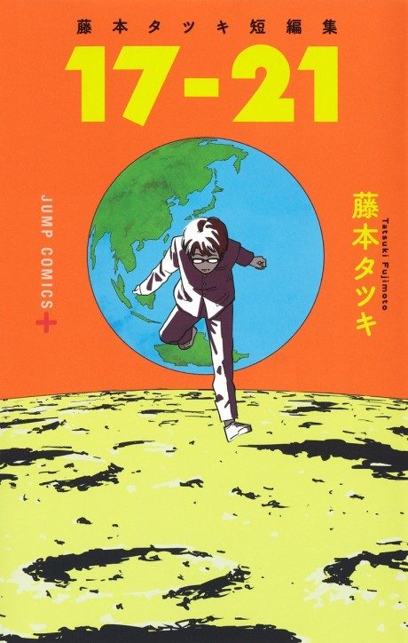

Tatsuki Fujimoto 17-26
藤本タツキ 17-26
The anime covers the whole manga.
7.9AniList score
—Animeter, no votes yet
8film
Anime finished. Where does the manga pick up?
StatusFully adapted
The eight-episode ONA adapts all eight one-shots in the 17-26 anthology.